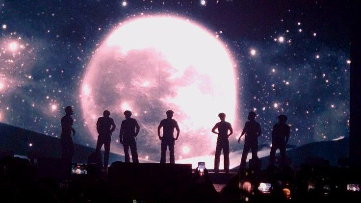
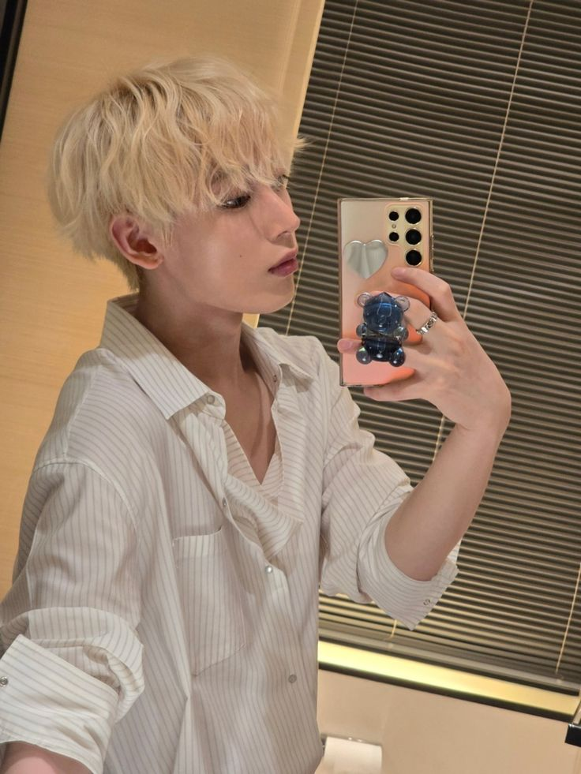

EN-

Enhypen — Bound by fate, we grow through darkness to find our light.
—— Biographie ——
Enhypen est un groupe Sud Coréen boy band formé à partir d'un survival show "I-LAND". Le groupe est composé de sept membres : Jungwon, Heeseung, Jay, Jake, Sunghoon, Sunoo et Ni-ki. Ils ont fait leurs débuts en novembre 2020 avec l'album "BORDER: DAY ONE".
Leur lore sont centrer sur le destin et les liens qui sont infinis. Ils le represente en étant des vampires. Leurs musique sont concentré sur les thèmes de l'amour, de la perte et de la découverte de soi.
—— Les Membres ——
[- Jungwon -]
Leader — Vocal
Calme / soft vibe
2020 - maintenant
[- Heeseung -]
Vocal — Rap
Charismatique / énergique
2020 - 2026
[- Jay -]
Vocal — Guitar
Jovial / créatif
2020 - maintenant
[- Jake -]
Vocal — Piano
Réfléchi / sensible
2020 - maintenant
[- Sunghoon -]
Vocal — Rap
Amusant / joueur
2020 - maintenant
[- Sunoo -]
Vocal — Dance
Énergique / joyeux
2020 - maintenant

[- Ni-ki -]
Vocal — Rap
Talentueux / passionné
2020 - maintenant
—— Discographie ——
Albums
- 2021 : DIMENSION: DILEMMA
- 2022 : DIMENSION: ANSWER
- 2022 : Japan one
- 2023 : ORANGE BLOOD
- 2024 : ROMANCE : UNTOLD
- 2024 : ROMANCE : UNTOLD-daydream
- 2025 : DESIRE : UNLEASH
- 2026 : THE SIN : VANISH
- Version Chinoise
- Version Anglaise
- Version japonaise
- Version par membre : Jungwon, Heeseung, Jay, Jake, Sunghoon, Sunoo, Ni-ki (avec tous des particularités vocales uniques et differentes)
Le premier album d'Enhypen, qui aborde des concepts de chaos et de lutte personnelle.
Le deuxième album d'Enhypen, qui explore des thèmes de croissance et de découverte de soi.
Le premier album japonais d'Enhypen, qui présente des versions japonaises de leurs chansons précédentes.
Le troisième album d'Enhypen, qui aborde des thèmes de lutte intérieure et de rédemption.
Le quatrième album d'Enhypen, qui explore des thèmes de romance et de relations.
Le cinquième album d'Enhypen, reprend certaines de l'ancien album avec des versions retravaillées ainsi que de nouvelles chansons dont "Daydream".
Le sixième album d'Enhypen, qui explore des thèmes de désir et de passion d'être désespérément avec son partenaire.
Le septième album d'Enhypen, qui aborde des thèmes de péché et de rédemption. Cet album est sortie en plusieurs version seulement numerique :
Singles
En cours